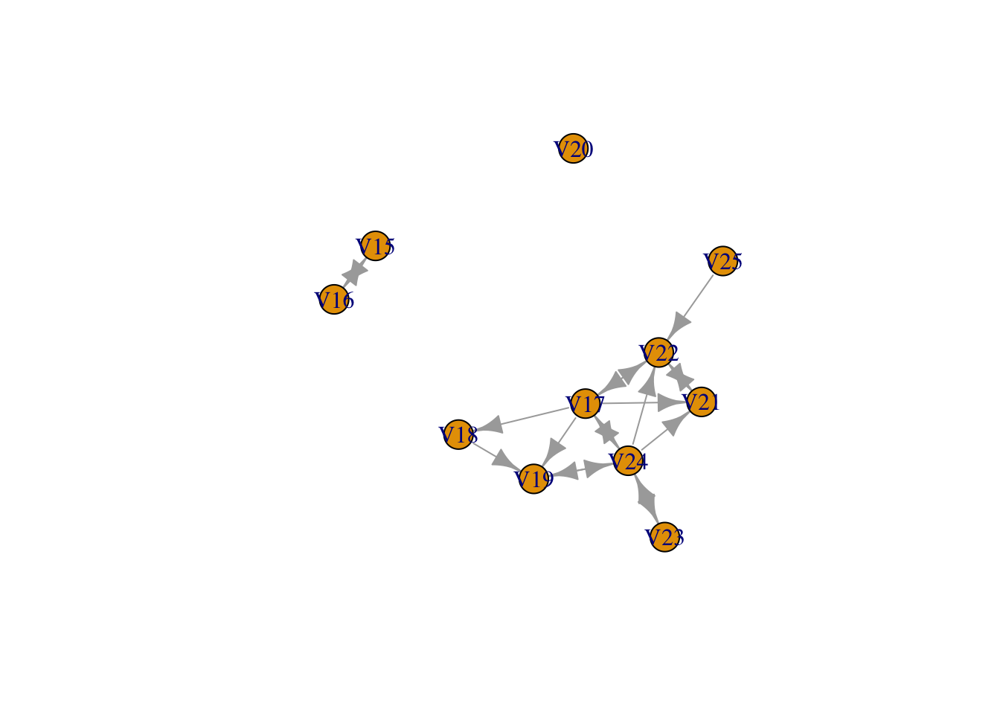

Collaboration in the sciences is generally regarded as beneficial, both for the quality of the research and for the development of scientific theories and methodologies (Haines, Godley, and Hawe (2011)). Interdisciplinary research, as a kind of collaboration, has become a focus in many universities, where curricula are adapted to better connect different disciplines in order for empirical phenomena to be approached from different perspectives and to create knowledge integration across disciplines. In fact, some scholars have argued that research-standards in some disciplines have already become increasingly interdisciplinary ‘below the surface’, pointing at the need for interdisciplinary proposals when trying to apply for research grants (Locatelli et al. (2021)). Others, however, have argued that while mentions of interdisciplinarity (which have indeed increased!) is reflected by neither a notable increase in interdisciplinary work, nor in the success of interdisciplinary studies (in terms of citations, higher ranking journals, impact, etc.) (Barthel and Seidl (2017))
One way to better understand interdisciplinarity - its causes, attributes and consequences - is by taking a social network perspective. One of the main reasons for taking a social network perspective is because it treats interdependencies (of observations, persons, etc.) as theoretically interesting, rather than as violations of assumptions. Treating researcher ties (in terms of collaborations) as informative may yield different results than focusing solely on the properties of the researcher him/herself (e.g. is the researcher him/herself educated across multiple disciplines). In other words, not only the attributes of the researcher may have causal properties for the degree of interdisciplinarity, but the “interdisciplinary-ness” is also dependent on the network of a researcher.
With regards to interdisciplinary collaborations, a social network analysis will shed light on, firstly, the way in which interdisciplinary research changed the structure of collaboration networks over time and, secondly, what the changing structure of these networks means for researchers who engaged in interdisciplinary research. Following this line of thinking, we can develop the following research questions:
RQ1: did collaboration networks become more interdisciplinary over time, i.e. did the structure of the collaboration network change over time with regards to the frequency/proportion of interdisciplinary collaborations? RQ2: to what extent does increasing interdisciplinarity at the macro-level(=network) lead to selective/partial clustering at the micro level? To answer these research questions, one needs a particular kind of data, i.e. data that is relational. For the purpose here, collaboration data from multiple research departments of Radboud University will be used.
We can describe a network by referring to the diads and the triads. If they have theoretical meaning, we could ask questions about them. E.g. we expect 210-configurations than 201-configuration. E.g.: Friendships are stable relations (usually). These configurations have theoretical meaning.
Let’s try an adjacency matrix to practice:
## [,1] [,2] [,3] [,4]
## [1,] 0 0 0 0
## [2,] 0 0 0 0
## [3,] 0 0 0 0
## [4,] 0 0 0 0Above, there are no relations…
## [,1] [,2] [,3] [,4]
## [1,] 0 1 0 0
## [2,] 0 0 0 0
## [3,] 0 0 0 0
## [4,] 0 0 0 0Now, there is one (directed) relation: from ‘1’ to ‘2’ (but not from
‘2’ to ‘1’!)
## [1] 4 0 0 0 0 0 0 0 0 0 0 0 0 0 0 0## [1] 2 2 0 0 0 0 0 0 0 0 0 0 0 0 0 0Above, we see the triad counts for matrix1 and matrix2, respectively.
Note that in the first matrix there are four ‘003’ relationships,
whereas in the second matrix there are two ‘003’ relationships and two
‘012’ relationships. This means: Matrix1: four triads with 0 ties (3
isolates). Matrix2: two triads with 0 ties (3 isolates), two triads with
one directed tie and one isolate.
How do these triads come
about? E.g. transitive triads (friends of friends become friends).
Different pathways have different theoretical mechanisms.
Another network characteristic is density (number of ties divided by possibile ties). Degree centrality is another descriptive charateristic. How many degrees you have? But in large networks, of course you will have many relations (out-degrees). So, we normalize it, e.g. max-min normalization.
Closeness centrality is another one, how central is a node ? Betweenness centrality is another one. These are all descriptives at the ego-level
Try:
#install.packages("RSiena")
require(RSiena)## Loading required package: RSienas501## V1 V2 V3 V4 V5 V6 V7 V8 V9 V10 V11 V12 V13 V14 V15 V16 V17 V18 V19 V20 V21 V22 V23 V24 V25 V26
## 1 0 0 0 0 0 0 0 0 0 0 1 0 0 1 0 0 0 0 0 0 0 0 0 0 0 0
## 2 0 0 0 0 0 0 1 0 0 0 1 0 0 0 0 0 0 0 0 0 0 0 0 0 0 0
## 3 0 0 0 1 0 0 0 0 1 0 0 0 0 0 0 0 0 0 0 0 0 0 0 0 0 0
## 4 0 0 1 0 0 0 0 0 1 0 0 0 0 0 0 0 0 0 0 0 0 0 0 0 0 0
## 5 0 0 0 0 0 0 0 0 0 0 0 0 0 0 0 0 0 0 0 0 0 0 0 0 0 0
## 6 0 0 0 0 0 0 0 1 0 0 0 0 0 0 0 0 0 0 0 0 0 0 0 0 0 0
## 7 0 1 0 0 0 0 0 0 0 0 0 0 0 0 0 0 0 0 0 0 0 0 0 0 0 0
## 8 0 0 0 0 0 1 0 0 0 0 0 0 0 0 0 0 0 0 0 0 0 0 0 0 0 0
## 9 0 0 1 1 0 0 0 0 0 0 0 0 0 0 0 0 0 0 0 0 0 0 0 0 0 0
## 10 0 0 0 0 0 0 0 0 0 0 1 0 0 0 1 0 0 0 0 0 0 0 0 0 0 0
## 11 0 1 0 0 0 0 0 0 0 0 0 0 0 0 1 1 0 0 0 0 0 0 0 0 0 0
## 12 0 0 0 0 0 0 1 0 0 0 0 0 0 0 0 0 0 0 0 0 0 0 0 0 0 0
## 13 0 0 0 0 0 0 0 0 0 0 0 0 0 0 0 0 0 0 0 0 0 0 0 0 0 0
## 14 1 0 0 0 0 0 0 0 0 1 1 0 0 0 0 0 0 0 0 0 0 0 0 0 0 0
## 15 0 0 0 0 0 0 0 0 0 1 1 0 0 0 0 1 0 0 0 0 0 0 0 0 0 0
## 16 0 0 0 0 0 0 0 0 0 0 1 0 0 0 1 0 0 0 0 0 0 0 0 0 0 0
## 17 0 0 0 0 0 0 0 0 0 0 0 0 0 0 0 0 0 1 1 0 1 1 0 1 0 0
## 18 0 0 0 0 0 0 0 0 0 0 0 0 0 0 0 0 0 0 1 0 0 0 0 0 0 0
## 19 0 0 0 0 0 0 0 0 0 0 1 0 0 0 0 0 0 0 0 0 0 0 0 1 0 1
## 20 0 0 0 0 0 0 0 0 0 0 0 0 0 0 0 0 0 0 0 0 0 0 0 0 0 0
## 21 0 0 0 0 0 0 0 0 0 0 0 0 0 0 0 0 0 0 0 0 0 1 0 0 0 0
## 22 0 0 0 0 0 0 0 0 0 0 0 0 0 0 0 0 1 0 0 0 1 0 0 0 0 0
## 23 0 0 0 0 0 0 0 0 0 0 0 0 0 0 0 0 0 0 0 0 0 0 0 1 0 0
## 24 0 0 0 0 0 0 0 0 0 0 0 0 0 0 0 0 1 0 1 0 1 1 1 0 0 0
## 25 0 0 0 0 0 0 0 0 0 0 0 0 0 0 0 0 0 0 0 0 0 1 0 0 0 0
## 26 0 0 0 0 0 0 1 0 0 0 0 0 0 0 0 0 0 0 0 0 0 0 0 0 0 0
## 27 0 0 0 0 0 0 0 0 0 0 0 0 0 0 0 0 0 0 0 0 0 0 0 0 0 0
## 28 0 0 0 0 0 0 0 0 0 0 0 0 0 0 0 0 0 0 0 0 0 0 0 0 0 0
## 29 0 0 0 0 0 0 0 0 0 0 0 0 0 0 0 0 0 0 0 0 0 0 0 0 0 1
## 30 0 0 0 0 0 0 0 0 0 0 1 0 0 0 0 0 0 0 0 0 0 0 0 0 0 1
## 31 0 0 0 0 0 0 0 0 0 0 0 0 0 0 0 0 0 0 0 0 1 0 0 0 1 0
## 32 0 0 0 0 1 0 0 0 0 0 0 0 0 0 0 0 0 0 0 0 1 0 0 0 0 0
## 33 0 0 0 0 0 0 0 0 0 1 0 0 0 0 0 0 0 0 0 0 0 0 0 0 0 0
## 34 0 0 0 0 0 0 0 0 0 0 0 0 0 0 0 0 0 0 0 0 0 0 0 0 0 0
## 35 0 0 0 0 0 0 0 0 0 0 0 0 0 0 0 0 0 1 0 0 0 0 0 0 0 0
## 36 0 0 0 0 0 0 0 0 0 0 0 0 0 0 0 0 0 0 0 0 0 0 0 0 0 0
## 37 0 0 0 0 0 0 0 0 0 0 0 0 0 0 0 0 0 0 0 0 0 0 0 0 0 0
## 38 0 0 0 0 0 0 0 0 0 0 0 0 0 0 0 0 0 0 0 0 0 0 0 0 0 0
## 39 0 0 0 0 0 0 0 0 0 0 0 0 0 0 0 0 0 0 0 0 0 0 0 0 0 0
## 40 0 0 0 0 0 0 0 0 0 0 0 0 0 0 0 0 0 0 0 0 0 0 0 0 0 0
## 41 0 0 0 0 0 0 0 0 0 0 0 0 0 0 0 0 0 0 0 0 0 0 0 0 0 0
## 42 0 0 0 0 0 0 1 0 0 0 0 0 0 0 0 0 0 0 0 0 0 0 0 0 0 0
## 43 0 0 0 0 0 0 0 0 0 0 0 0 0 0 0 0 0 0 0 0 0 1 0 0 0 0
## 44 0 0 0 0 0 0 1 0 0 0 0 0 0 0 0 0 0 0 0 0 0 0 0 0 0 0
## 45 0 0 0 0 0 0 0 0 0 0 0 0 0 0 0 0 0 0 0 0 0 0 0 0 0 0
## 46 0 0 0 0 0 0 0 0 0 0 0 0 0 0 0 0 0 0 0 0 0 0 0 0 0 0
## 47 0 0 0 0 0 0 0 0 0 0 0 0 0 0 0 0 0 0 0 0 0 0 0 0 0 0
## 48 0 0 0 0 0 0 0 0 0 0 0 0 0 0 0 0 0 0 0 0 0 0 0 0 0 0
## 49 0 0 0 0 0 0 0 0 0 0 0 0 0 0 0 0 0 0 0 0 0 0 0 0 0 0
## 50 0 0 0 0 0 0 0 0 0 0 0 0 0 0 0 0 0 0 0 0 0 0 0 0 0 0
## V27 V28 V29 V30 V31 V32 V33 V34 V35 V36 V37 V38 V39 V40 V41 V42 V43 V44 V45 V46 V47 V48 V49 V50
## 1 0 0 0 0 0 0 0 0 0 0 0 0 0 0 0 0 0 0 0 0 0 0 0 0
## 2 0 0 0 0 0 0 0 0 0 0 0 0 0 0 0 0 0 0 0 0 0 0 0 0
## 3 0 0 0 0 0 0 0 0 0 0 0 0 0 0 0 0 0 0 0 0 0 0 0 0
## 4 0 0 0 0 0 0 0 0 0 0 0 0 0 0 0 0 0 0 0 0 0 0 0 0
## 5 0 0 0 0 0 1 0 0 0 0 0 0 0 0 0 0 0 0 0 0 0 0 0 0
## 6 0 0 0 0 0 0 0 0 0 0 0 0 0 0 0 0 0 0 0 0 0 0 0 0
## 7 0 0 0 0 0 0 0 0 0 0 0 0 0 0 0 1 0 1 0 0 0 0 0 0
## 8 0 0 0 0 0 0 0 0 0 0 0 0 0 0 0 0 0 0 0 0 0 0 0 0
## 9 0 0 0 0 0 0 0 0 0 0 0 0 0 0 0 0 0 0 0 0 0 0 0 0
## 10 0 0 0 0 0 0 1 0 0 0 0 0 0 0 0 0 0 0 0 0 0 0 0 0
## 11 0 0 0 0 0 0 0 0 0 0 0 0 0 0 0 0 0 0 0 0 0 0 0 0
## 12 0 0 0 0 0 0 0 0 0 0 0 0 0 0 0 1 0 1 0 0 0 0 0 0
## 13 0 0 0 0 0 0 0 0 0 0 0 0 0 0 0 0 0 0 0 0 0 0 0 0
## 14 0 0 0 0 0 0 0 0 0 0 0 0 0 0 0 0 0 0 0 0 0 0 0 0
## 15 0 0 0 0 0 0 0 0 0 0 0 0 0 0 0 0 0 0 0 0 0 0 0 0
## 16 0 0 0 0 0 0 0 0 0 0 0 0 0 0 0 0 0 0 0 0 0 0 0 0
## 17 0 0 0 0 0 0 0 0 0 0 0 0 0 0 0 0 0 0 0 0 0 0 0 0
## 18 0 0 0 0 0 0 0 0 1 0 0 0 0 0 0 0 0 0 0 0 0 0 0 0
## 19 0 0 0 1 0 0 0 0 0 0 0 0 0 0 0 0 0 0 0 0 0 0 0 0
## 20 0 0 0 0 0 0 0 0 0 0 0 0 0 0 0 0 0 0 0 0 0 0 0 0
## 21 0 0 0 0 0 0 0 0 0 0 0 0 0 0 0 0 0 0 0 0 0 0 0 0
## 22 0 0 0 0 1 0 0 1 0 0 0 0 0 0 0 0 0 0 0 0 0 0 0 0
## 23 0 0 0 0 0 0 0 0 0 0 0 0 0 0 0 0 0 0 0 0 0 0 0 0
## 24 0 0 0 0 0 0 0 0 0 0 0 0 0 0 0 0 0 0 0 0 0 0 0 0
## 25 0 0 0 0 1 1 0 0 0 0 0 0 0 0 0 0 0 0 0 0 0 0 0 0
## 26 0 0 1 0 0 0 0 0 0 0 0 0 0 0 0 0 0 1 0 0 0 0 0 0
## 27 0 1 1 1 0 0 0 0 0 0 0 0 0 0 0 0 0 0 0 0 0 0 0 0
## 28 1 0 0 0 0 0 0 0 0 0 0 0 0 0 0 0 0 0 0 0 0 0 0 0
## 29 0 0 0 1 0 0 1 0 0 0 0 0 0 0 0 0 0 0 0 0 0 0 0 0
## 30 0 0 1 0 0 0 1 0 0 0 0 0 0 0 0 0 0 0 0 0 0 0 0 0
## 31 0 0 0 0 0 1 0 0 0 0 0 0 0 0 0 0 0 0 0 0 0 0 0 0
## 32 0 0 0 0 1 0 0 0 0 0 1 0 0 0 0 0 0 0 0 0 0 0 0 0
## 33 0 0 0 1 0 0 0 0 0 0 0 0 0 0 0 0 0 0 0 0 0 0 0 0
## 34 0 0 0 0 1 0 0 0 0 0 1 0 0 0 0 0 0 0 0 0 0 0 0 0
## 35 0 0 0 0 0 0 0 0 0 0 0 0 0 0 0 0 0 0 0 0 0 0 0 0
## 36 0 0 0 0 0 0 0 0 0 0 0 1 0 0 1 0 0 0 0 0 0 0 0 0
## 37 0 0 0 0 1 1 0 1 0 0 0 0 0 0 0 0 0 0 0 0 0 0 0 0
## 38 0 0 0 0 0 0 0 0 0 1 0 0 0 0 1 0 0 0 0 0 0 0 0 0
## 39 0 0 0 0 0 0 0 0 0 0 0 0 0 0 0 0 1 0 0 0 0 0 0 0
## 40 0 0 0 0 0 0 0 0 0 0 0 0 0 0 0 0 0 0 1 1 1 0 0 0
## 41 0 0 0 0 0 0 0 0 0 1 0 1 0 0 0 0 0 0 0 0 0 0 0 0
## 42 0 0 0 0 0 0 0 0 0 0 0 0 0 0 0 0 0 1 0 0 0 0 0 0
## 43 0 0 0 0 0 0 0 0 0 0 0 0 1 0 0 0 0 0 0 0 0 0 0 0
## 44 0 0 0 0 0 0 0 0 0 0 0 0 0 0 0 1 0 0 0 0 0 0 0 0
## 45 0 0 0 0 0 0 0 0 0 0 0 0 0 1 0 0 0 0 0 1 1 0 0 0
## 46 0 0 0 0 0 0 0 0 0 0 0 0 0 1 0 0 0 0 1 0 0 0 1 0
## 47 0 0 0 0 0 0 0 0 0 0 0 0 0 0 0 0 0 0 0 0 0 0 0 0
## 48 0 0 0 0 0 0 0 0 0 0 0 0 0 0 0 0 0 0 0 1 0 0 1 0
## 49 0 0 0 0 0 0 0 0 0 0 0 0 0 0 0 0 0 0 0 1 0 1 0 0
## 50 0 0 0 0 0 0 0 0 0 0 0 0 0 0 0 0 0 0 0 0 0 0 0 0?s501
?RSiena
dim(s501)## [1] 50 50smaller_matrix <- s501[15:25,15:25]
graph_small <- graph_from_adjacency_matrix(smaller_matrix)
plot(graph_small) Okay, so now we have to get centrality measures etc. First degree centrality
smaller_matrix## V15 V16 V17 V18 V19 V20 V21 V22 V23 V24 V25
## 15 0 1 0 0 0 0 0 0 0 0 0
## 16 1 0 0 0 0 0 0 0 0 0 0
## 17 0 0 0 1 1 0 1 1 0 1 0
## 18 0 0 0 0 1 0 0 0 0 0 0
## 19 0 0 0 0 0 0 0 0 0 1 0
## 20 0 0 0 0 0 0 0 0 0 0 0
## 21 0 0 0 0 0 0 0 1 0 0 0
## 22 0 0 1 0 0 0 1 0 0 0 0
## 23 0 0 0 0 0 0 0 0 0 1 0
## 24 0 0 1 0 1 0 1 1 1 0 0
## 25 0 0 0 0 0 0 0 1 0 0 0graph_out <- degree(graph_small, mode = "out")
graph_in <- degree(graph_small, mode = "in")
graph_in## V15 V16 V17 V18 V19 V20 V21 V22 V23 V24 V25
## 1 1 2 1 3 0 3 4 1 3 0graph_out## V15 V16 V17 V18 V19 V20 V21 V22 V23 V24 V25
## 1 1 5 1 1 0 1 2 1 5 1Closeness
closeness(graph_small)## V15 V16 V17 V18 V19 V20 V21 V22 V23
## 1.00000000 1.00000000 0.14285714 0.06666667 0.08333333 NaN 0.06250000 0.09090909 0.08333333
## V24 V25
## 0.14285714 0.05555556Betweenness <- betweenness(graph_small)
Betweenness## V15 V16 V17 V18 V19 V20 V21 V22 V23 V24 V25
## 0 0 15 0 5 0 0 11 0 18 0?betweennessNote that, for example, for V3